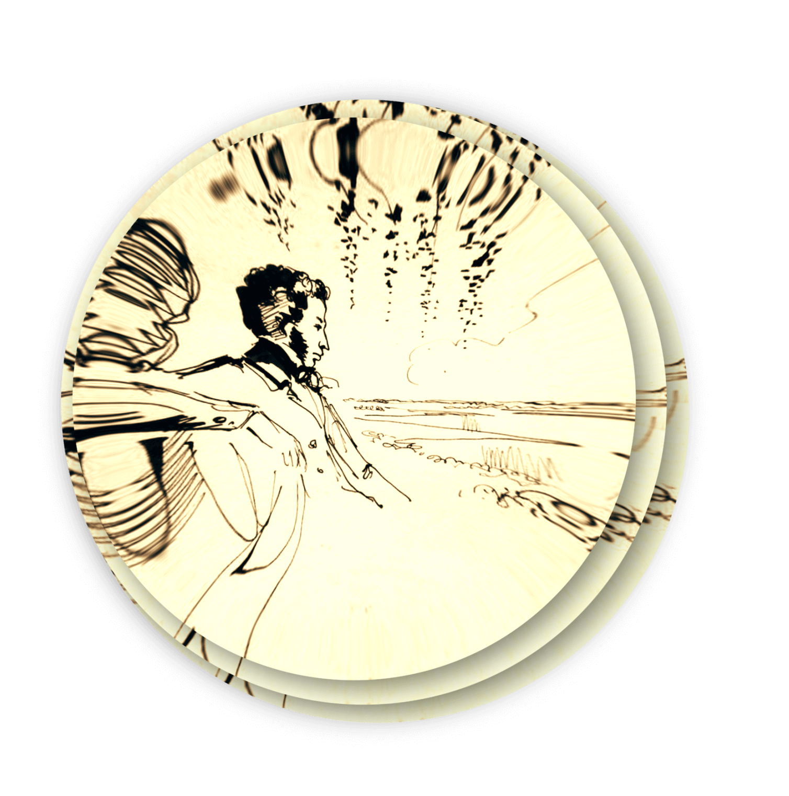

Сказкам в творчестве Пушкина уделено не так много внимания, как теме любви или природы. Но образы, созданные поэтом, настолько удивительны и реалистичны, что не дают оторваться от чтения и дают волю воображению. Ребенку легко представить и «ученого кота» и «дуб зеленый» и богатырей, выходящих строем из волн моря. В каждой сказке обличаются человеческие пороки, наглядно показывается, к чему приводит зависть, жадность, гордыня. «Сказка о попе и о работнике его Балде» (1830). Сюжет сказки: скупой и глупый поп, повстречавшись с работником Балдой, получает воздаяние за свою жадность. Сказка, написанная в Болдине 13 сентября 1830 года. Основой послужила русская народная сказка, записанная Пушкиным в Михайловском от Арины Родионовны. При жизни поэта не печаталась. «Сказка о рыбаке и рыбке» (1834). Наверное, каждый из нас помнит сказку про Золотую рыбку, старика и его жадную жену-старуху. Сюжет этой сказки написан по мотивам сказки братьев Гримм «О рыбаке и его жене» и русской народной сказки «Жадная старуха», где вместо рыбки волшебное дерево. Первая публикация состоялась в 1835 году. Именно с этой сказки в нашу жизнь вошла поговорка «остаться у разбитого корыта».
«Сказка о царе Салтане» (1831). Полное название «Сказка о царе Салтане, о сыне его славном и могучем богатыре князе Гвидоне Салтановиче и о прекрасной царевне Лебеди». Сказка написана в 1831 году и впервые опубликована в 1832 году в сборнике «Стихотворения А.С. Пушкина». Сюжет сказки взят из русской народной сказки «По колена ноги в золоте, по локоть руки в серебре». «Сказка о мертвой царевне и семи богатырях» (1833). Сюжетную линию сказки Пушкин использовал из русской народной сказки. Хотя схожие сюжеты имеют многие народные сказки в уголках света. Подобные сказки есть и у братьев Гримм и у Шарля Перо, написанные так же по мотивам народных сказок. Пушкин написал эту сказку в 1833 году, а в следующем году сказка была впервые опубликована. «Сказка о золотом петушке» (1834). Последняя сказка Пушкина. Он ее написал в 1834 году, а в 1835 году в журнале «Библиотека для чтения» она была впервые представлена публике. Сказка написана по мотивам одной из арабских народных сказок.
Александр Сергеевич Пушкин за свою короткую жизнь внес огромный вклад в развитие русского языка. Он оставил после себя богатейшее литературное наследие, изучаемое с начальных классов школы. Каждый из нас прочитал хотя бы одно из произведений Пушкина, будь то сказка, или поэма. Очень много произведений Пушкина были экранизированы, по ним ставились оперы и спектакли. Роман в стихах «Евгений Онегин» (1831). «Евгений Онегин» самый известный роман Пушкина. Начиная с первых классов школы, отрывки из этого произведения заучивают наизусть: «Уж небо осенью дышало…», «Зима!.. Крестьянин торжествуя…», «Мой дядя самых честных правил…», «Я к вам пишу - чего же боле?..». Роман охватывает период с 1819 по 1825 года и, прочитав его, можно очень много узнать о том времени. Пушкин начал писать «Евгения Онегина» в Кишиневе в мае 1823 года, когда находился там в ссылке. Летом 1831 года Пушкин, находясь в Царском селе, пишет «Письмо Онегина», завершая работу над произведением. Полное издание романа вышло в 1833 году. «Онегин» пережил много переизданий и был переведен на многие языки мира (английский, немецкий, французский, китайский и т.д.). Драма «Борис Годунов» (1825). «Бориса Годунова» Пушкин написал в 1825 году, под впечатлением от «Истории государства Российского» Карамзина. В это время Александр Сергеевич находился в ссылке в Михайловском из-за увлечения «атеистическими учениями». В сюжете «Годунова» Пушкин использует, как достоверные данные, так и народные слухи. В 1869 году Мусоргский пишет оперу «Борис Годунов» с текстом Пушкина. Роман «Дубровский» (1833). Неоконченное произведение Пушкина о благородном разбойнике Дубровском и об их любви с Марией Троекуровой. Сюжет основан на реальных событиях. Своему названию роман обязан первому издателю. У Пушкина вместо названия стояла дата, когда он начал писать роман - 21 октября 1832 года. Анна Ахматова считала это произведением самым неудачным, написанным ради денег и похожему на «бульварные романы» того времени.
Роман «Капитанская дочка» (1836). Александр Сергеевич начинает работу над «Капитанской дочкой» в то время, когда писал историческую хронику «История Пугачевского бунта». В это время он посещает места, описанные в романе, общается с очевидцами событий восстания Пугачева. Роман дополняет художественными описаниями «Историю» и в нем прослеживаются мотивы Вальтера Скотта. Первоначально роман вышел как записки покойного Петра Гринева в 1836 году в журнале «Современник». «Капитанскую дочку» много раз экранизировали в СССР и несколько раз за рубежом. Ставились оперы и балеты на сюжет романа. «Капитанская дочка», кроме восторженных отзывов, получала и отрицательные от некоторых критиков. Повесть «Пиковая дама» (1834). Идею «Пиковой дамы» Пушкину подсказал князь Голицын, а прототипом старой графини стала княгиня Наталья Петровна Голицына. Первый раз повесть была представлена публике в 1834 году в журнале «Библиотека для чтения». После того как произведение было опубликовано, в обществе, со слов Пушкина, стало очень модно использовать комбинацию карт из повести. Это одно из первых русскоязычных произведений, положительно встреченных в то время за рубежом. Первым оперу на сюжет «Пиковой дамы» написал в 1864 году один из создателей Венской оперы Франц фон Зуппе. Так же оперу на тему этой повести в 1890 году написал Петр Ильич Чайковский. «Пиковую даму» первый раз экранизировали в 1910 году и после этого, еще не раз, разные кинорежиссеры делали постановки повести. Поэма «Руслан и Людмила» (1820). «У Лукоморья дуб зеленый…» - эти строки, думаю, помнит каждый. Пушкин начал поэму, с его слов, еще в лицее. Но считается, что Пушкин начал работу над поэмой уже после лицея. Чаще всего он работал над «Руслан и Людмилой» во время болезней. И в 1820 году закончил это произведение. В том же году поэма была первый раз опубликована. Михаил Иванович Глинка написал оперу «Руслан и Людмила» в 1842 году. Так же по мотивам этой сказки было снято много фильмов и мультфильмов, и поставлено несколько балетов.
Александр Сергеевич Пушкин (1799-1837) русский поэт, драматург и прозаик, заложивший основы русского реалистического направления, критик и теоретик литературы, историк, публицист; один из самых авторитетных литературных деятелей первой трети XIX века. Детство Пушкин родился 26 мая (6 июня) 1799 г. в Москве в небогатой дворянской семье. В детские годы большое влияние на Пушкина оказал его дядя, Василий Львович Пушкин, знавший несколько языков, знакомый с поэтами и сам не чуждый литературным занятиям. Маленького Александра воспитывали французы-гувернеры, он рано выучился читать и уже в детстве начал писать стихи, правда, по-французски. Летние месяцы будущий поэт обычно проводил у своей бабушки по матери, Марии Алексеевны Ганнибал, в подмосковном селе Захарове, близ Звенигорода. Ранние детские впечатления отразились в первых произведениях Пушкина: поэмах «Монах» (1813г.), «Бова» (1814г.) и в лицейских стихотворениях «Послание к Юдину» (1815г.), «Сон» (1816г.). Юность Шесть лет Пушкин провёл в Царскосельском Лицее. Здесь юный поэт пережил события Отечественной войны 1812 года. Здесь впервые открылся и был высоко оценён его поэтический дар. В июле 1814 года Пушкин впервые выступил в печати, в издававшемся в Москве журнале «Вестник Европы». В тринадцатом номере было напечатано стихотворение «К другу-стихотворцу», подписанное псевдонимом Александр Н.к.ш.п. Ещё на лицейской скамье Пушкин был принят в литературное общество «Арзамас», выступавшее против рутины и архаики в литературном деле. Атмосфера свободомыслия и революционных идей во многом определили впоследствии гражданскую позицию поэта. В 1816 году характер лирики Пушкина претерпевает существенные изменения. Элегия становится основным его жанром. Молодость Из Лицея Пушкин был выпущен в июне 1817 году в чине коллежского секретаря и определён в Коллегию иностранных дел. Впрочем, чиновничья служба мало интересует поэта, и он окунается в бурную петербургскую жизнь: он становится постоянным посетителем театра, принимает участие в заседаниях литературного общества «Арзамас», в 1819 году вступает в члены литературно-театрального сообщества «Зелёная лампа». В эти годы он занят работой над поэмой «Руслан и Людмила», начатой в Лицее и отвечавшей программным установкам литературного общества «Арзамас» о необходимости создания национальной богатырской поэмы. Поэма была закончена в мае 1820 года и после публикации вызвала ожесточённые отклики критиков, возмущённых снижением высокого канона. На юге (1820—1824) Весной 1820 года Пушкина вызвали к военному генерал-губернатору Петербурга графу М. А. Милорадовичу для объяснения по поводу содержания его стихотворений, несовместимых со статусом государственного чиновника. Его перевели из столицы на юг в кишинёвскую канцелярию И. Н. Инзова. По пути к новому месту службы Александр Сергеевич заболевает воспалением легких, искупавшись в Днепре. Для поправления здоровья Раевские вывозят в конце мая 1820 года больного поэта с собой на Кавказ и в Крым. Лишь в сентябре он прибывает в Кишинёв. Новый начальник снисходительно относился к службе Пушкина, позволяя подолгу отлучаться ему и гостить у друзей в Каменке (зима 1820—1821гг.), выезжать в Киев, путешествовать с И.П. Липранди по Молдавии и наведываться в Одессу (конец 1821г.). В Кишинёве Пушкин вступает в масонскую ложу «Овидий», о чём сам пишет в своем дневнике. Первая «южная поэма» Пушкина «Кавказский пленник» (1822 г.) поставила его во главе всей современной русской литературы, принесла заслуженную славу первого поэта, неизменно ему сопутствующую до конца 1820-х гг. Позже выходит другая «южная поэма» «Бахчисарайский фонтан» (1824г.). Поэма получилась фрагментарной, словно таящей в себе нечто недосказанное, что и придало ей особую прелесть, возбуждающую в читательском восприятии сильное эмоциональное поле. Со временем в Пушкине созрело убеждение (поначалу безысходно трагическое), что в мире действуют объективные законы, поколебать которые человек не в силах, как бы ни были отважны и прекрасны его помыслы. В таком ключе был начат в мае 1823 года в Кишинёве роман в стихах «Евгений Онегин». Но в творчестве поэта зреет кризис, связанный с разочарованием в просветительской идее торжества разума и раздумьями о трагических поражениях революционных движений в Европе. Пока же в июле 1823 года Пушкин добивается перевода по службе в Одессу в канцелярию графа Воронцова. Именно в это время он сознаёт себя как профессиональный литератор, что предопределилось бурным читательским успехом его произведений. Интрижка с женой начальника и неспособность к государственной службе, приводит к тому, что поэт подаёт прошение об отставке. В результате в июле 1824 года отстранён от службы и направлен в псковское имение Михайловское под надзор родителей. Михайловское Несмотря на тяжёлые переживания, первая Михайловская осень была плодотворной для поэта. Пушкин завершает начатые в Одессе стихотворения «Разговор книгопродавца с поэтом», «К морю», поэму «Цыганы» (1827г.), продолжает писать роман в стихах. Осенью 1824 года он возобновляет работу над автобиографическими записками и обдумывает сюжет народной драмы «Борис Годунов. В 1825 году Пушкин встречает в соседнем имении Тригорском Анну Керн, которой посвящает стихотворение «Я помню чудное мгновенье...».
После ссылки В ночь с 3 на 4 сентября 1826 года в Михайловское прибывает нарочный от псковского губернатора Б.А. Адеркаса: Пушкин в сопровождении фельдъегеря должен явиться в Москву, где ожидал коронации новый император, Николай I. 8 сентября, сразу же после прибытия, Пушкин доставлен к царю для личной аудиенции. Поэту по возвращении из ссылки гарантировалось личное высочайшее покровительство и освобождение от обычной цензуры. Именно в эти годы возникает в творчестве Пушкина интерес к личности Петра I, царя-преобразователя. Он становится героем начатого романа о прадеде поэта, Абраме Ганнибале, и новой поэмы «Полтава». К этому времени в творчестве поэта обозначился новый поворот. Трезвый исторический и социальный анализ действительности окружающего мира, что наполняет его творчество ощущением тревожного предчувствия, ведёт к широкому вторжению фантастики, рождает горестные, подчас болезненные воспоминания и напряжённый интерес к смерти. В 1827 году началось расследование по поводу стихотворения «Андрей Шенье, в котором был усмотрен отклик на события 14 декабря 1825года, а в 1828 правительству стала известна кишинёвская поэма «Гавриилиада». Дела эти были по высочайшему повелению прекращены после объяснений Пушкина, но за поэтом был учреждён негласный полицейский надзор. Болдино Пушкин чувствует необходимость житейских перемен. В 1830 году повторное его сватание к Наталье Николаевне Гончаровой, 18-летней московской красавице, было принято, и осенью он отправляется в нижегородское имение своего отца Болдино для вступления во владение близлежащей деревней Кистенево, подаренной отцом к свадьбе. Этой поре было суждено стать знаменитой Болдинской осенью, наивысшей точкой пушкинского творчества, когда из-под его пера вылилась целая библиотека произведений: «Повести покойного Ивана Петровича Белкина», «Маленькие трагедии», последние главы «Евгения Онегина», «Сказка о попе и о работнике его Балде». 18 февраля (2 марта) 1831года Пушкин венчается с Натальей Гончаровой в московской церкви Большого Вознесения у Никитских ворот. Весной того же года переселяется с женой в Петербург, сняв на лето дачу в Царском Селе. Здесь Пушкин пишет «Письмо Онегина», тем самым окончательно завершая работу над романом в стихах. Новое восприятие действительности, наметившееся в его творчестве в конце 1820-х годов, требовало углублённых занятий историей: в ней следовало найти истоки коренных вопросов современности. В 1831 году он получает разрешение работать в архивах и зачисляется снова на службу в качестве «историографа», получив высочайшее задание написать «Историю Петра». С начала 1830-х годов проза в творчестве Пушкина начинает превалировать над поэтическими жанрами. И начинается работа над романом «Дубровский» (1832—1833гг.), герой его, мстя за отца, у которого несправедливо отняли родовое имение, становится разбойником. 7 января 1833 года Пушкин был избран членом Российской академии одновременно с П. А. Катениным, М. Н. Загоскиным, Д. И. Языковым и А. И. Маловым. Осенью 1833 года он возвращается в Болдино. Теперь Болдинская осень Пушкина вдвое короче, нежели три года назад, но по значению она соразмерна Болдинской осени 1830 года. За полтора месяца Пушкин завершает работу над «Историей Пугачёва» и «Песнями западных славян», начинает работу над повестью «Пиковая дама», создаёт поэмы «Анджело» и «Медный всадник», «Сказку о рыбаке и рыбке» и «Сказку о мёртвой царевне и о семи богатырях», стихотворение в октавах «Осень». Петербург В ноябре 1833 года Пушкин возвращается в Петербург, ощущая необходимость круто переменить жизнь и прежде всего выйти из-под опеки двора. Накануне 1834 года Николай I производит своего историографа в младший придворный чин камер-юнкера. Единственным выходом из двусмысленного положения, в котором оказался Пушкин, было добиться немедленной отставки. Но семья росла (у Пушкиных родилось четверо детей: Мария, Александр, Григорий и Наталья), светская жизнь требовала больших расходов, последние же книги Пушкина вышли более года назад и большого дохода не принесли, исторические занятия поглощали всё больше времени, жалование историографа было незначительным, и только царь мог разрешить издание новых произведений Пушкина, которые могли бы упрочить его материальное положение. Чтобы как-то выйти из срочных долгов, Пушкин в начале 1834 года быстро дописывает другую, прозаическую петербургскую повесть, «Пиковую даму» и помещает её в журнале «Библиотека для чтения», который платил Пушкину незамедлительно и по высшим ставкам. В 1834 году Пушкин подаёт в отставку с просьбой сохранить право работы в архивах, необходимое для исполнения «Истории Петра». Просьба об отставке была принята, но работать в архивах ему было запрещено. Приходилось надеяться только на литературные доходы. Но профессиональный литератор в России был слишком необычной фигурой. Доход его зависел от читательского спроса на произведения. В конце 1834 года вышло несколько итоговых изданий произведений Пушкина: полный текст «Евгения Онегина», собрания стихотворений, повестей, поэм — все эти книги расходились с трудом. «Современник» В этих условиях он находит выход, разом решающий многие проблемы. Он основывает журнал, названный «Современником». Тем не менее читательского успеха журнал не имел. У журнала оказалось всего 600 подписчиков, что делало его разорительным для издателя, так как не покрывались ни типографские расходы, ни гонорары сотрудников. Два последних тома «Современника» Пушкин более чем наполовину наполняет своими произведениями, по большей части, анонимными. Дуэль и гибель поэта Зимой 1837 года возник конфликт поэта с Жоржем Дантесом, принятым на службу в русскую гвардию благодаря покровительству усыновившего его нидерландского посланника барона Луи Геккерена. Ссора, причиной которой была оскорблённая честь Пушкина, привела к дуэли. 27 января поэт был смертельно ранен в бедро. Пуля перебила шейку бедра и проникла в живот. Для того времени ранение было смертельным. Он знал о приближающемся конце и стойко переносил страдания. — Поэт просил прощения за нарушение царского запрета на дуэли: "...жду царского слова, чтобы умереть спокойно..." — Государь: "Если Бог не велит нам уже свидеться на здешнем свете, посылаю тебе моё прощение и мой последний совет умереть христианином. О жене и детях не беспокойся, я беру их на свои руки." Николай видел в Пушкине опасного «вождя вольнодумцев» и впоследствии уверял, что он «насилу довёл Пушкина до кончины христианской», что не соответствовало действительности: ещё до получения царской записки поэт, узнав от врачей, что его рана смертельна, послал за священником, чтобы причаститься. 29 января (10 февраля) в 14:45 Пушкин скончался от перитонита. Николай I выполнил обещания, данные поэту. Распоряжение Государя: 1. Заплатить долги. 2. Заложенное имение отца очистить от долга. 3. Вдове пенсион и дочери по замужество. 4. Сыновей в пажи и по 1 500 рублей на воспитание каждого по вступление на службу. 5. Сочинения издать на казённый счёт в пользу вдовы и детей. 6. Единовременно 10 000 рублей. Александр Пушкин похоронен на кладбище Святогорского монастыря Псковской губернии.
